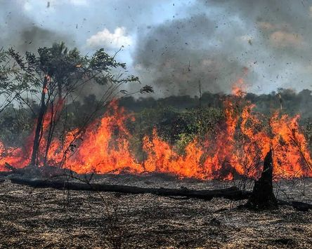
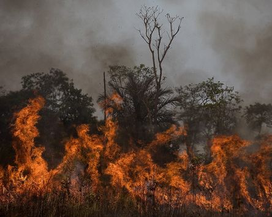
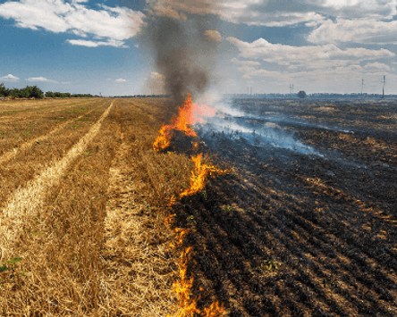

Impacto das Queimadas
Destruição da fauna e flora
As queimadas devastam grandes áreas de vegetação, causando a morte de plantas e animais. Espécies que dependem de habitats específicos podem ser levadas à extinção.
Perda de biodiversidade
Incêndios florestais repetidos reduzem a diversidade de espécies e podem alterar ecossistemas de forma irreversível.
Degradação do solo
O calor intenso das queimadas destrói a camada superior do solo, removendo nutrientes e deixando-o mais suscetível à erosão.
Emissão de gases de efeito estufa
Queimadas liberam grandes quantidades de dióxido de carbono (CO₂), metano (CH₄) e óxidos de nitrogênio (NOx), que contribuem para o aquecimento global.
Alterações climáticas locais
Queimadas em grande escala podem alterar padrões de precipitação e temperatura em regiões específicas, afetando o clima local.


